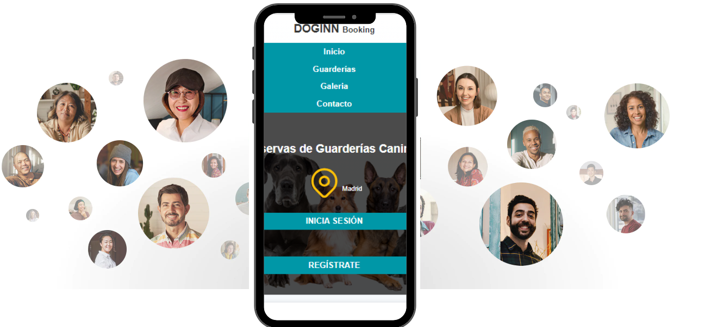

Pon tu guardería en Doginn
Podrías ganar
175 €
Precio total: 175€
Descubre cómo calculamos cuánto podrías ganar
Poner tu guardería en Doginn es muy fácil.
Ayuda de un Guarderista experimentado
Te asignaremos un Guarderista de tu zona, que te guiará en tus primeros pasos hasta recibir tu primer huésped peludo. Podrán comunicarse por teléfono, videollamada o chat.
Un primer huésped canino experimentado
Para tu primera reserva, puedes decidir si prefieres recibir a un perro que ya tenga experiencia en guarderías: al menos tres estancias completas y una buena reputación.
Asistencia especializada de Doginn